Gallery of wacky phenomena
On "Mirror +":
You may swap a pair of edge pieces, for example, yellow/blue <=> yellow/green: (front/back view)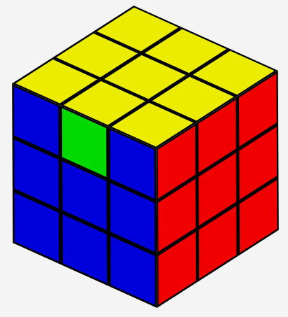 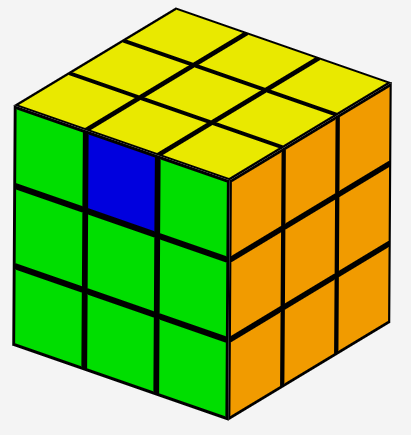
On "Mirror X":
You may swap a pair of corner pieces, for example, yellow/blue/red <=> yellow/green/orange: (front/back view)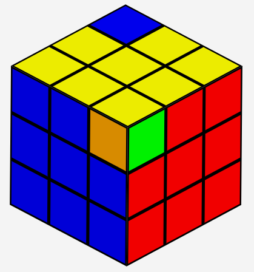 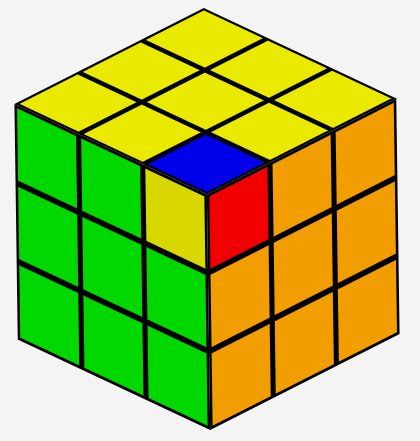
or mirror a pair of corner pieces, for example, yellow/blue/red <=> yellow/green/orange: (front/back view)
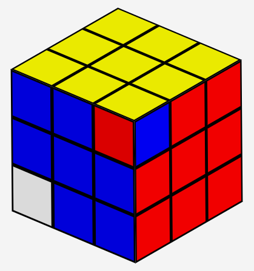

or even twist a corner by itself, for example, yellow/blue/red:
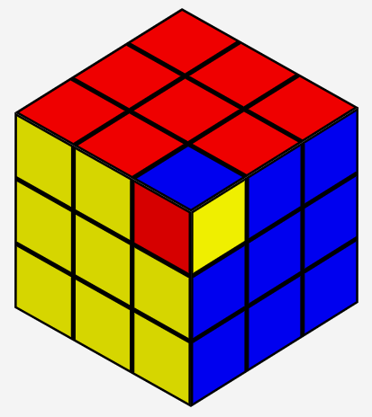
On "Mirror & twist":
You may, naturally, do all of the above things. In addition, you may mirror swap a pair of adjacent corners, which is not even possible on "Mirror X": (front/back view)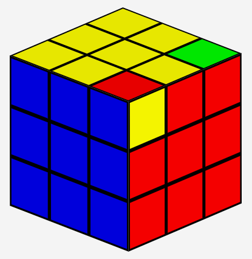 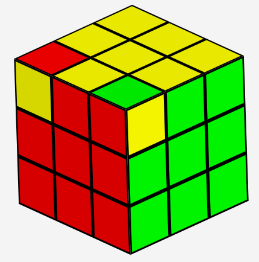
On "4x4x4: Mirror X":
You may mirror a pair of edge pieces in place, or swap a pair of them.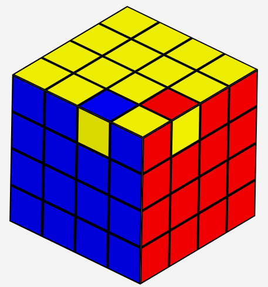 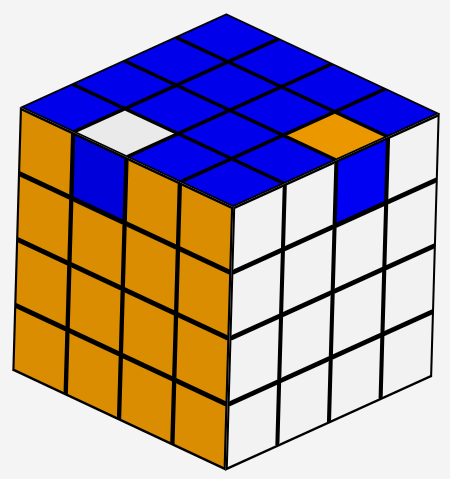 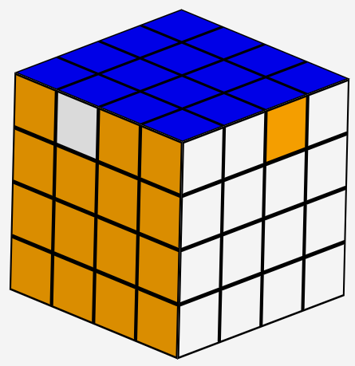
Number of permutations
I understand the number of permutations (states) of a puzzle has almost nothing to do with its difficulty. But just in case you are curious, here are the number of permutations of the 3x3x3 puzzles.| Half turn cube: | 663552 | Subgroup of all the other puzzles here |
| Mirror +: | 18579456 | |
| Rubik's Cube: | 43252003274489856000 | |
| Mirror X: | 118634066124315033600 | (96/35=2.74 times that of the Rubik's cube) |
| Mirror & twist: | 33217538514808209408000 | 768 times that of the Rubik's cube |
The half turn cube is a subgroup of everything else, because mirroring across perpendicular directions turns a layer by 180 degrees. The group of Mirror X is even larger than that of the Rubik's Cube.
Here is the GAP code I used to compute these numbers. They provide insights when exploring the possible transforms.